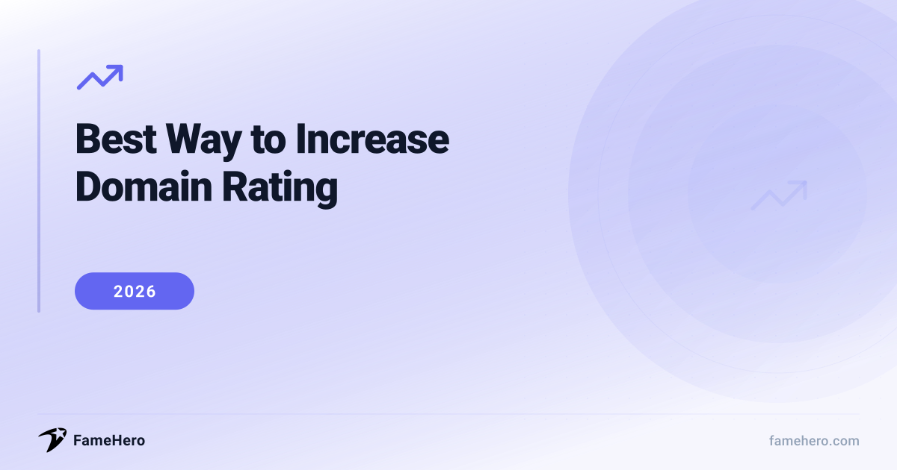

Best Way to Increase Domain Rating in 2026 (Boost Credibility)

Why Domain Rating Matters and the 2026 Challenge
Businesses strive to boost their Domain Rating (DR) to enhance search engine credibility, aiming for better rankings and more organic traffic. In 2026, this goal is complicated by advanced AI search algorithms and a stronger focus on E-E-A-T. Search engines now value authentic expertise and brand authority more than just content volume or backlinks.
This guide will detail effective approaches to DR improvement. We'll cover established methods like acquiring quality backlinks and producing expert content, alongside practical on-page and technical SEO advice. Additionally, we'll present five key software tools specifically designed to help elevate your Domain Rating.
Want results faster? Get published from $49
FameHero guarantees media placements on real news sites. See what's possible with a free scan.
Best Way to Increase Domain Rating (2026)
1. Cultivate High-Quality Backlinks Through Strategic Outreach
Focus on acquiring backlinks from authoritative and relevant websites by creating valuable content. Strategies include guest blogging, broken link building, reclaiming unlinked brand mentions, digital PR, and data-driven content creation. Personalize outreach pitches and lead with value.
- Best For: Businesses of all sizes seeking credibility and improved rankings, especially those with unique data or guides.
- Expected Timeline: 3-12 months for noticeable results; ongoing efforts yield continuous improvement.
- Approximate Cost: $500 - $5,000+ per month, depending on in-house, freelance, or agency support, plus content creation costs.
2. Enhance Content Quality and Topical Authority
Create in-depth, original content demonstrating E-E-A-T, focusing on 'information gain' and layering human experience onto AI-generated content. Refresh older content with updated data and AI insights. Build topical authority by covering subjects deeply and optimizing for AI-mediated discovery.
- Best For: Businesses aiming to become thought leaders, particularly in niches where expertise and trust are paramount.
- Expected Timeline: 6-12 months for significant impact.
- Approximate Cost: $1,000 - $10,000+ per month for content creation, research, and expert input.
3. Strengthen Technical SEO and Site Architecture
Ensure your website is technically sound for users and search engines, including AI bots. Optimize site architecture, crawlability, fix broken links, manage crawl budget, and use canonical tags correctly. Prioritize core web vitals and implement schema markup for better content understanding by AI.
- Best For: All websites, essential for any SEO strategy, especially e-commerce and complex sites.
- Expected Timeline: Weeks for crawlability improvements; 3-6 months for long-term ranking benefits.
- Approximate Cost: $500 - $3,000+ per month for ongoing audits/implementation, or $1,000 - $5,000 for a one-time audit.
4. Leverage Digital PR and Brand Signals
Generate newsworthy stories and data-driven campaigns to earn media coverage and links from reputable sources. Build brand authority and trust, seek media requests, participate in interviews, and build social proof through reviews and mentions.
- Best For: Brands seeking increased visibility, credibility, and authority beyond direct SEO, effective for B2B and B2C companies.
- Expected Timeline: 3-6 months for initial results; 6-12+ months for momentum.
- Approximate Cost: $2,000 - $10,000+ per month for PR retainers or campaigns.
Expert Tips to Boost Your Domain Rating in 2026
- Focus on acquiring high-quality backlinks from authoritative and relevant websites. Prioritize natural link building over PBNs or paid links.
- Create comprehensive, in-depth content that addresses user intent thoroughly. Aim for 'pillar' content that can attract numerous internal and external links.
- Conduct regular technical SEO audits to fix crawl errors, broken links, and improve site speed, all of which impact search engine perception.
- Avoid common mistakes like keyword stuffing or creating thin, low-value content, which can harm your DR.
- Don't ignore internal linking. Strategically link related content within your site to distribute link equity and improve user navigation.
- Steer clear of link schemes or manipulative tactics. Google's algorithms are sophisticated and penalize such practices, negatively affecting your DR.
- Monitor your competitors' backlink profiles to identify opportunities for acquiring similar high-authority links.
Service Providers
FameHero
famehero.comBudgetSmall to large businessesStarting at $49 per placementFameHero specializes in securing placements on trusted, high-authority publications. By strategically placing articles about your brand on these reputable sites, FameHero helps to build your brand's credibility and authority, which directly contributes to an improved Domain Rating. They focus on SKU-style placement buys rather than a traditional agency roadmap, making it ideal for businesses that understand the value of PR in boosting their online authority.
StrengthsOffers a direct path to high-authority placements without the need for extensive outreach or content creation on your part. Their model is transparent and focused on guaranteed publications.Best forBusinesses that understand the value of PR in boosting their online authority and want direct placements on high-authority publications.Not ideal forBusinesses whose increase in Domain Rating hinges purely on product-led or channel-specific strategies without a public relations component.SEMrush
semrush.comMid-marketSmall businesses to enterprisesStarting at $129.95/monthSEMrush provides a comprehensive suite of tools that aid in understanding and improving your website's authority. Its Authority Score metric helps you benchmark your site against competitors, while its backlink analysis tools identify opportunities for high-quality link building. By analyzing competitor backlink profiles and identifying toxic links, SEMrush empowers you to build a stronger, more credible backlink profile.
StrengthsOffers an all-in-one solution for SEO, including robust backlink analysis, competitor research, and keyword tracking, which are all crucial for a strong backlink strategy.Best forBusinesses looking for a comprehensive SEO toolkit to analyze backlink profiles, identify opportunities, and monitor their authority.Not ideal forBeginners who may find the extensive features overwhelming; very small businesses or individuals with limited budgets.Ahrefs
ahrefs.comMid-marketSmall businesses to enterprisesStarting at $99/monthAhrefs is renowned for its extensive backlink database and powerful analysis tools. It allows you to meticulously examine your backlink profile, identify high-authority referring domains, and discover link-building opportunities. By focusing on acquiring links from relevant and authoritative websites, as facilitated by Ahrefs' data, you can significantly enhance your Domain Rating.
StrengthsIndustry-leading backlink analysis and competitor research capabilities, providing deep insights into link-building strategies.Best forSEO professionals and businesses focused on in-depth backlink analysis and competitor research to drive Domain Rating growth.Not ideal forThose needing a complete SEO solution beyond backlink analysis; users sensitive to higher price points.Moz Pro
moz.com/products/proMid-marketSmall businesses to enterprisesStarting at $99/monthMoz Pro is a comprehensive SEO platform that includes tools specifically designed to track and improve Domain Authority (DA), a metric closely related to Domain Rating. Its Link Explorer allows for in-depth backlink analysis, helping you identify high-quality link-building opportunities and audit your existing backlink profile for toxic links.
StrengthsOffers a well-established and widely recognized metric (DA) for authority tracking, along with robust tools for site audits and link analysis.Best forBusinesses that want to track authority using a recognized metric like DA and utilize comprehensive tools for link analysis and site audits.Not ideal forUsers who prioritize Ahrefs' DR metric specifically for backlink profile strength over DA.Linkody
linkody.comBudgetSEO agencies, marketers, brands, and site ownersStarting at $14.90/monthLinkody is a specialized backlink management and monitoring tool. It helps you track your backlink profile 24/7, identify new and lost links, and analyze the quality of referring domains. By providing detailed insights into your link-building efforts, Linkody enables you to focus on acquiring high-quality backlinks, which is fundamental to increasing your Domain Rating.
StrengthsExcellent for ongoing backlink monitoring and management, offering features like a disavow tool and detailed link analytics.Best forSEO agencies, marketers, and site owners who need dedicated tools for continuous backlink monitoring and management.Not ideal forBusinesses looking for an all-in-one SEO solution; those who only need occasional backlink checks.
Common Pitfalls When Aiming to Boost Domain Rating
- Prioritizing quantity over quality of backlinks: A common mistake is believing that a high volume of backlinks is the sole driver of a good Domain Rating (DR). However, authoritative tools like Ahrefs emphasize that the quality and relevance of linking domains are far more critical than sheer numbers. A few high-quality links from reputable sites can significantly outperform numerous low-quality ones.
- Neglecting content quality and relevance: Even with a strong backlink profile, subpar content will hinder DR growth. Websites that consistently produce valuable, engaging, and relevant content are more likely to attract natural backlinks from authoritative sources.
- Overlooking the importance of internal linking: While external backlinks are crucial, a robust internal linking strategy is essential for distributing link equity throughout your website and improving user navigation. Failing to implement this can impede DR progress.
- Employing manipulative link-building tactics: Practices such as buying links, engaging in excessive link exchanges, or using private blog networks (PBNs) are considered black-hat SEO. These tactics can result in severe penalties from search engines, drastically reducing your DR.
- Failing to analyze competitor backlink profiles: Understanding where competitors acquire their high-quality links can reveal valuable opportunities for your own link-building efforts. Ignoring this competitive analysis can lead to missed strategic advantages.
- Not actively managing toxic backlinks: Accumulating spammy or irrelevant backlinks can negatively impact your DR. Failing to identify and disavow these toxic links is a frequent oversight that can harm your site's authority.